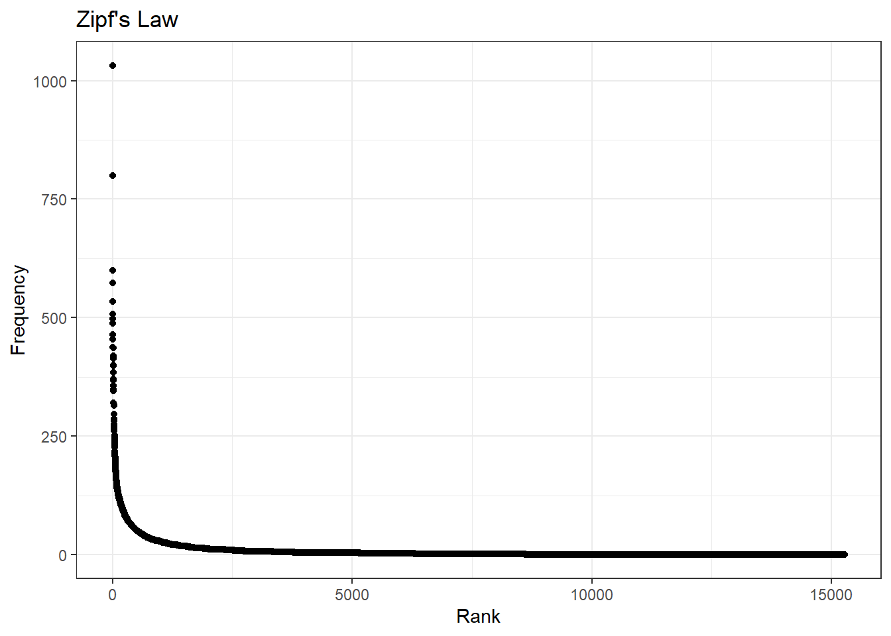
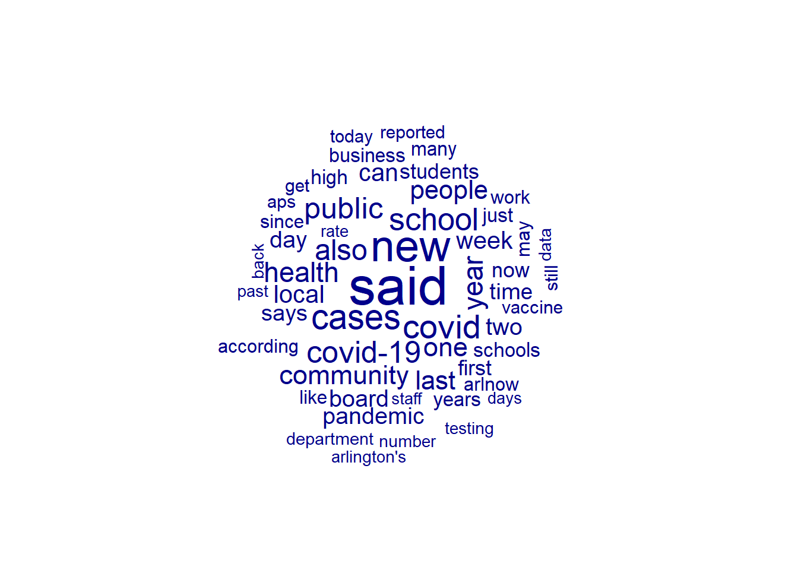
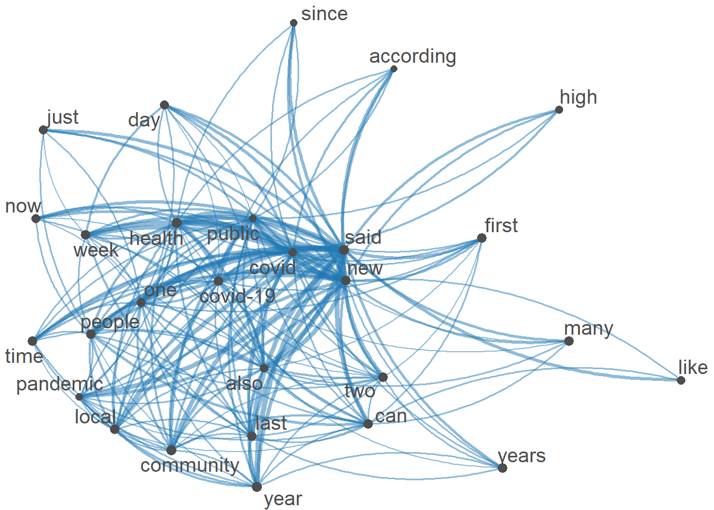

Code
library(tidyverse)
library(quanteda)
library(quanteda.textplots)
knitr::opts_chunk$set(echo = TRUE, warning = FALSE, message = FALSE)Miranda Manka
October 15, 2022
The dataset contains 550 different articles from Arlnow (local news site in Northern Virginia) from March 2020 to September 2022. I decided to go back to March because that is when covid was officially declared a pandemic in the U.S. I may scrape more to get the months before March. I may also try to find a similar site for another county/city in another state to compare the two and see similarities and differences.
Here I am just reading in the data from the csv I created and dropping the extra column that was created in the write.csv and renaming a column.
Most of this analysis follows the week 6 tutorial we were given, I found it very helpful and I wanted to note where a lot of the code/information came from as I use a lot of it for this post.
I started to do this in my last blog post but I didn’t have it quite right. I learned more about it this past week and now have a better sense of what is happening and why/how to use the dfm. I have now incorporated the updated code from the week 6 tutorial for a more clean and accurate usage, without having to use a lot of different packages and code.
In the DFM, the rows indicate documents, the columns indicate words, and the value of each cell in the matrix is the count of the word (column) for the document (row).
# create the dfm - this part includes basic pre-processing, including removing punctuation and numbers, makes words lowercase, and removes all english stop words. I also decided to remove some words relevant to this analysis, including "arlington", "county", "virginia", "$"; these terms are not really helpful to look at as they describe the location. This is done to clean the data and get it ready for further analysis.
arlnow_covid_dfm = tokens(arlnow_covid_corpus,
remove_punct = TRUE,
remove_numbers = TRUE) %>%
dfm(tolower=TRUE) %>%
dfm_remove(stopwords('english')) %>%
dfm_remove(c("arlington", "county", "virginia", "$"))
# summary of the dfm
arlnow_covid_dfmDocument-feature matrix of: 550 documents, 15,270 features (98.86% sparse) and 3 docvars.
features
docs hundred parents say public schools prioritize recreating pre-covid
text1 2 5 2 2 5 1 1 2
text2 0 0 0 1 0 0 0 0
text3 0 0 0 4 1 0 0 0
text4 0 0 0 1 0 0 0 0
text5 0 3 0 1 3 0 0 0
text6 0 0 0 3 0 0 0 0
features
docs normalcy classroom
text1 2 1
text2 0 0
text3 0 0
text4 0 0
text5 0 0
text6 0 0
[ reached max_ndoc ... 544 more documents, reached max_nfeat ... 15,260 more features ] said new cases covid school covid-19 public also
1032 799 600 573 534 507 498 488
year health community one last people local can
464 454 437 436 419 414 400 399
week two board pandemic
385 371 368 357 [1] "recreating" "electronic" "informal" "reside"
[5] "elementary-aged" "golden" "pre-2020" "ever-present" The size of the word corresponds to the frequency of the term in the corpus (how often it appears).
Word frequencies are distributed according to Zipf’s law, where the frequency of any word is inversely proportional to its rank in the frequency table.
Frequency Rank
said 1032 1
new 799 2
cases 600 3
covid 573 4
school 534 5
covid-19 507 6
# Updating our DFMs, trimming and making smaller
# trim based on the overall frequency (i.e., the word counts)
smaller_dfm = dfm_trim(arlnow_covid_dfm, min_termfreq = 200)
# trim based on the proportion of documents that the feature appears in; here,
# the feature needs to appear in more than 10% of documents (chapters)
smaller_dfm = dfm_trim(smaller_dfm, min_docfreq = 0.1, docfreq_type = "prop")
smaller_dfmDocument-feature matrix of: 550 documents, 54 features (67.27% sparse) and 3 docvars.
features
docs public schools according pandemic since school board says covid high
text1 2 5 1 1 1 6 2 1 4 1
text2 1 0 1 0 1 0 0 0 6 0
text3 4 1 0 0 1 0 0 0 4 0
text4 1 0 1 1 1 0 0 0 8 0
text5 1 3 0 0 0 11 3 2 4 3
text6 3 0 2 4 4 0 1 1 3 0
[ reached max_ndoc ... 544 more documents, reached max_nfeat ... 44 more features ]
This tells us less about how words within the corpus relate to one another. The idea here is to construct a matrix that presents the number of times word{a} appears in the same document as word{b}.
# let's create a nicer dfm by limiting to words that appear frequently and are in more than 30% of chapters
smaller_dfm = dfm_trim(arlnow_covid_dfm, min_termfreq = 100)
smaller_dfm = dfm_trim(smaller_dfm, min_docfreq = .3, docfreq_type = "prop")
# create fcm from dfm
smaller_fcm = fcm(smaller_dfm)
# check the dimensions
dim(smaller_fcm)[1] 28 28This can be used to look at relationships between words/themes in the corpus.
[1] 28 28
---
title: "Blog Post 3"
author: "Miranda Manka"
desription: "Working with data"
date: "10/15/2022"
format:
html:
toc: true
code-fold: true
code-copy: true
code-tools: true
categories:
- Miranda Manka
---
```{r}
#| label: setup
#| warning: false
#| message: false
library(tidyverse)
library(quanteda)
library(quanteda.textplots)
knitr::opts_chunk$set(echo = TRUE, warning = FALSE, message = FALSE)
```
## Data
The dataset contains 550 different articles from Arlnow (local news site in Northern Virginia) from March 2020 to September 2022. I decided to go back to March because that is when covid was officially declared a pandemic in the U.S. I may scrape more to get the months before March. I may also try to find a similar site for another county/city in another state to compare the two and see similarities and differences.
Here I am just reading in the data from the csv I created and dropping the extra column that was created in the write.csv and renaming a column.
```{r}
arlnow_covid = read_csv("_data/arlnow_covid_posts.csv", col_names = TRUE, show_col_types = FALSE)
arlnow_covid = subset(arlnow_covid, select = -c(1))
arlnow_covid = rename(arlnow_covid, text_field = raw_text)
```
## Analysis
Most of this analysis follows the week 6 tutorial we were given, I found it very helpful and I wanted to note where a lot of the code/information came from as I use a lot of it for this post.
### Corpus, Summary, and Tokens
```{r}
arlnow_covid_corpus = corpus(arlnow_covid, docid_field = "doc_id", text_field = "text_field")
arlnow_covid_summary = summary(arlnow_covid_corpus)
arlnow_covid_corpus_tokens = tokens(arlnow_covid_corpus, remove_punct = T)
```
### Document-Feature Matrix (DFM)
I started to do this in my last blog post but I didn't have it quite right. I learned more about it this past week and now have a better sense of what is happening and why/how to use the dfm. I have now incorporated the updated code from the week 6 tutorial for a more clean and accurate usage, without having to use a lot of different packages and code.
In the DFM, the rows indicate documents, the columns indicate words, and the value of each cell in the matrix is the count of the word (column) for the document (row).
```{r}
# create the dfm - this part includes basic pre-processing, including removing punctuation and numbers, makes words lowercase, and removes all english stop words. I also decided to remove some words relevant to this analysis, including "arlington", "county", "virginia", "$"; these terms are not really helpful to look at as they describe the location. This is done to clean the data and get it ready for further analysis.
arlnow_covid_dfm = tokens(arlnow_covid_corpus,
remove_punct = TRUE,
remove_numbers = TRUE) %>%
dfm(tolower=TRUE) %>%
dfm_remove(stopwords('english')) %>%
dfm_remove(c("arlington", "county", "virginia", "$"))
# summary of the dfm
arlnow_covid_dfm
# most frequent terms (features)
topfeatures(arlnow_covid_dfm, 20)
# can also look at the first text to see what words were uniquely used there (this can be done for any specific article/text)
first_text_words = as.vector(colSums(arlnow_covid_dfm) == arlnow_covid_dfm["text1",])
colnames(arlnow_covid_dfm)[first_text_words]
```
#### Wordcloud
The size of the word corresponds to the frequency of the term in the corpus (how often it appears).
```{r}
textplot_wordcloud(arlnow_covid_dfm, min_count = 50, max_words = 50, random_order = FALSE)
```
#### Zipf's Law
Word frequencies are distributed according to Zipf's law, where the frequency of any word is inversely proportional to its rank in the frequency table.
```{r}
# first, we need to create a word frequency variable and the rankings
word_counts = as.data.frame(sort(colSums(arlnow_covid_dfm), dec = T))
colnames(word_counts) = c("Frequency")
word_counts$Rank = c(1:ncol(arlnow_covid_dfm))
head(word_counts)
# now we can plot this - and the plot seems to look as we expect
ggplot(word_counts, mapping = aes(x = Rank, y = Frequency)) +
geom_point() +
labs(title = "Zipf's Law", x = "Rank", y = "Frequency") +
theme_bw()
# Updating our DFMs, trimming and making smaller
# trim based on the overall frequency (i.e., the word counts)
smaller_dfm = dfm_trim(arlnow_covid_dfm, min_termfreq = 200)
# trim based on the proportion of documents that the feature appears in; here,
# the feature needs to appear in more than 10% of documents (chapters)
smaller_dfm = dfm_trim(smaller_dfm, min_docfreq = 0.1, docfreq_type = "prop")
smaller_dfm
textplot_wordcloud(smaller_dfm, min_count = 50,
random_order = FALSE)
```
### Feature Co-occurrence Matrix
This tells us less about how words within the corpus relate to one another. The idea here is to construct a matrix that presents the number of times word{a} appears in the same document as word{b}.
```{r}
# let's create a nicer dfm by limiting to words that appear frequently and are in more than 30% of chapters
smaller_dfm = dfm_trim(arlnow_covid_dfm, min_termfreq = 100)
smaller_dfm = dfm_trim(smaller_dfm, min_docfreq = .3, docfreq_type = "prop")
# create fcm from dfm
smaller_fcm = fcm(smaller_dfm)
# check the dimensions
dim(smaller_fcm)
```
#### Semantic Network
This can be used to look at relationships between words/themes in the corpus.
```{r}
# pull the top features
myFeatures = names(topfeatures(smaller_fcm, 30))
# retain only those top features as part of our matrix
even_smaller_fcm = fcm_select(smaller_fcm, pattern = myFeatures, selection = "keep")
# check dimensions
dim(even_smaller_fcm)
# compute size weight for vertices in network
size = log(colSums(even_smaller_fcm))
# create plot
textplot_network(even_smaller_fcm, vertex_size = size / max(size) * 3)
# I think this is a really interesting graph because it is similar to a word cloud in showing most used words, but it shows the connections between words, which I think is really helpful and I can use in further analysis.
```